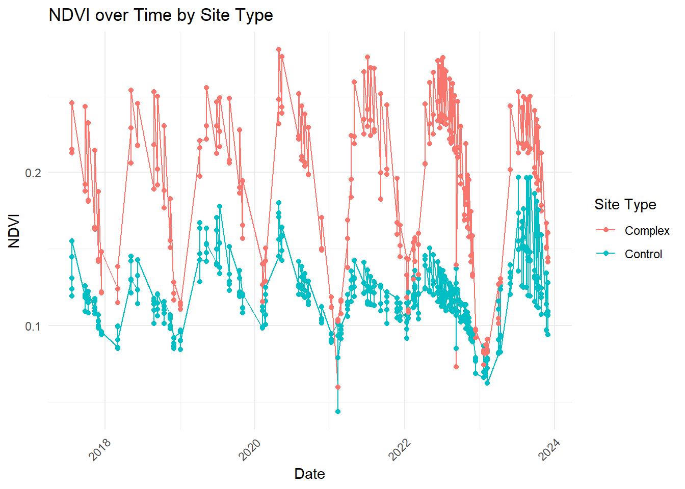
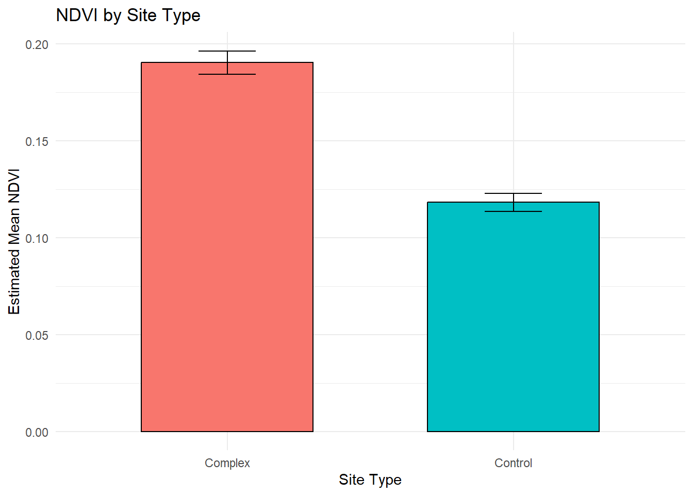

| type | unique_id | area | shape_length | shape_area | frequency | site_id | ndvi | date |
|---|---|---|---|---|---|---|---|---|
| Control | C1 | 297792.5 | 2647.666 | 297792.5 | 100 | 1 | 0.1239187 | 2017-07-25 |
| Control | C1 | 297792.5 | 2647.666 | 297792.5 | 100 | 1 | 0.1180117 | 2017-09-27 |
| Control | C1 | 297792.5 | 2647.666 | 297792.5 | 100 | 1 | 0.1165928 | 2017-10-13 |
| Control | C1 | 297792.5 | 2647.666 | 297792.5 | 100 | 1 | 0.1092998 | 2017-11-14 |
| Control | C1 | 297792.5 | 2647.666 | 297792.5 | 100 | 1 | 0.0998393 | 2017-11-30 |
| Control | C1 | 297792.5 | 2647.666 | 297792.5 | 100 | 1 | 0.0947969 | 2017-12-16 |
NDVI Analysis
1. Introduction
1.1 Background
Wind energy is rapidly expanding as part of global efforts to reduce carbon emissions, with onshore wind power contributing over 90% of global wind energy production. While it offers a low-carbon alternative to fossil fuels, onshore wind plants can affect ecosystems through both direct and indirect impacts. Direct impacts stem from infrastructure development, including land clearing and habitat loss, while indirect effects arise from land transformation, soil compaction, altered hydrology, and microclimatic changes caused by turbine operation (Denholm et al., 2009; Trainor et al., 2016). Although the land footprint for wind energy is relatively small compared with coal or nuclear power, ecosystem degradation (including changes in vegetation, soil, and hydrological processes) can occur if restoration and mitigation are insufficient (Seifert et al., 2025).
Remote sensing provides a powerful tool to quantify vegetation responses to environmental change and disturbances. The Normalized Difference Vegetation Index (NDVI), captures changes in vegetation greenness, cover, and productivity. It offers a consistent, spatially explicit metric for monitoring ecosystem impacts over time (Pettorelli et al., 2005). Several studies have applied NDVI to assess vegetation near onshore wind farms, documenting both reductions in greenness due to habitat disturbance and mixed seasonal responses in grasslands, coastal, and alpine ecosystems (Aksoy et al., 2023; Diffendorfer et al., 2022; Ma et al., 2023; Tang et al., 2017). These applications highlight NDVI’s utility for detecting and quantifying vegetation impacts associated with wind energy development.
1.2 Purpose of this exercise
To illustrate the application of NDVI for assessing vegetation impacts, I aim to create a GitHub repository using an example dataset from the Salinas River, California (Aubry & Sistla, 2025).This dataset contains mean NDVI values for riparian vegetation across beaver-influenced and control sites over several years. It is not related to wind energy, but its structure is comparable to the type of data expected from wind energy studies: multiple sites, repeated temporal measurements, and contrasting environmental conditions. The dataset is readily available from Dryad and I can use it to practice how to clean, organize, and analyze NDVI data in a reproducible manner. This methodology can later be adapted for the third chapter of my PhD.
2. Quality check
I used my quality check function to detect any problems with the dataset like duplicated rows, missing values or outliers:
- duplicated rows: 0
- missing values: 0
- outliers (±3 SD): 0
3. Data exploration
After getting a brief overview of the dataset and the variables it contains Table 1, I used my data exploration function to create a histogram that visualizes the distribution of different NDVI values Figure 1. To see differences between beaver-influenced (complex) and control sites, I made a boxplot Figure 2. Finally, I visualized how NDVI values varied over the sampling period to see both seasonal variation (winter low vs summer high) and differences between site type (complex vs control) Figure 3.


3. Data exploration

Model plot




References
Aksoy, T., Cetin, M., Cabuk, S. N., Senyel Kurkcuoglu, M. A., Bilge Ozturk, G., & Cabuk, A. (2023). Impacts of wind turbines on vegetation and soil cover: A case study of urla, cesme, and karaburun peninsulas, turkey. Clean Technologies and Environmental Policy, 25(1), 51–68.
Aubry, S., & Sistla, S. (2025). Mean NDVI values from july 2017 to december 2023 for selected beaver complex sites and control sites along the salinas river. Zenodo. https://doi.org/10.5281/zenodo.11480851
Denholm, P., Hand, M., Jackson, M., & Ong, S. (2009). Land use requirements of modern wind power plants in the united states. National Renewable Energy Lab.(NREL), Golden, CO (United States).
Diffendorfer, J. E., Vanderhoof, M. K., & Ancona, Z. H. (2022). Wind turbine wakes can impact down-wind vegetation greenness. Environmental Research Letters, 17(10), 104025.
Ma, B., Yang, J., Chen, X., Zhang, L., & Zeng, W. (2023). Revealing the ecological impact of low-speed mountain wind power on vegetation and soil erosion in south china: A case study of a typical wind farm in yunnan. Journal of Cleaner Production, 419, 138020.
Pettorelli, N., Vik, J. O., Mysterud, A., Gaillard, J.-M., Tucker, C. J., & Stenseth, N. Chr. (2005). Using the satellite-derived NDVI to assess ecological responses to environmental change. Trends in Ecology & Evolution, 20(9), 503–510. https://doi.org/https://doi.org/10.1016/j.tree.2005.05.011
Seifert, L., Graae, B. J., Hagen, D., & May, R. (2025). The emerging need for ecosystem restoration to mitigate the impacts of onshore wind energy. Sustainable Environment, 11(1), 2567100.
Tang, B., Wu, D., Zhao, X., Zhou, T., Zhao, W., & Wei, H. (2017). The observed impacts of wind farms on local vegetation growth in northern china. Remote Sensing, 9(4), 332.
Trainor, A. M., McDonald, R. I., & Fargione, J. (2016). Energy sprawl is the largest driver of land use change in united states. PloS One, 11(9), e0162269.